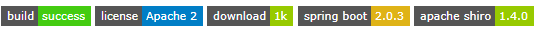 FEBS是一个简单高效的后台权限管理系统。项目基础框架采用全新的Java Web开发框架 —— Spring Boot2.0.3，消除了繁杂的XML配置，使得二次开发更为简单；数据访问层采用Mybatis，同时引入了通用Mapper和PageHelper插件，可快速高效的对单表进行增删改查操作，消除了大量传统XML配置SQL的代码；安全框架采用时下流行的Apache Shiro，可实现对按钮级别的权限控制；前端页面使用Bootstrap构建，主题风格为时下Google最新设计语言Material Design，并提供多套配色以供选择。FEBS意指：Fast，Easy use，Beautiful和Safe。
功能模块
系统功能模块组成如下所示：
1 | |-------------------------------------------| |
技术选型
后端
基础框架：Spring Boot 2.0.3.RELEASE
持久层框架：Mybatis 3.4.5
安全框架：Apache Shiro 1.4.0
摸板引擎：Thymeleaf 3.0.9.RELEASE
数据库连接池：阿里巴巴Druid 1.1.10
缓存框架：Ehcache
日志打印：logback
其他：fastjson，poi，javacsv，quartz等。
前端
基础框架：Bootstrap 4
JavaScript框架：jQuery
消息组件：Bootstrap notify
提示框插件：SweetAlert2
树形插件：jsTree
树形表格插件：jqTreeGrid
表格插件：BootstrapTable
表单校验插件：jQuery-validate
多选下拉框插件：multiple-select
图表插件：Highcharts
时间插件：daterangepicker
开发环境
语言：Java 8
IDE：Eclipse Oxygen & IDEA 2018.1.4(Ultimate Edition)
依赖管理：Maven
数据库：Oracle 11g & MySQL5.7
版本管理：SVN，git
系统预览
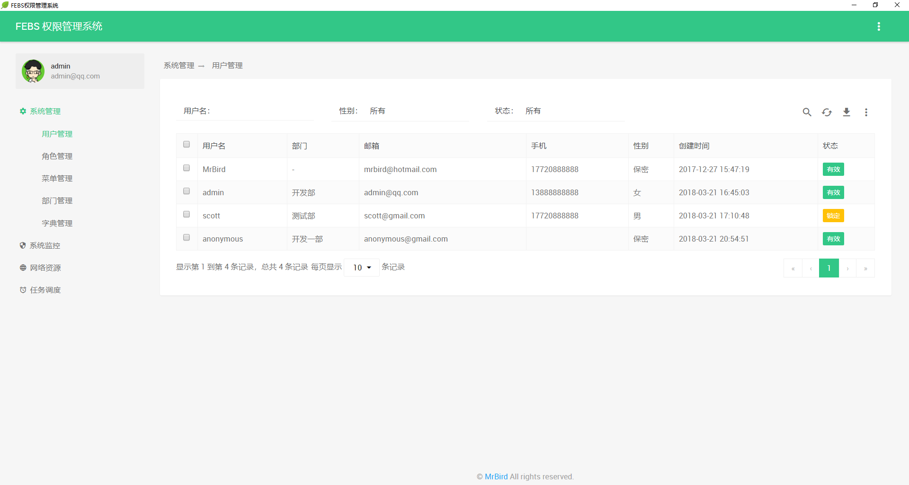
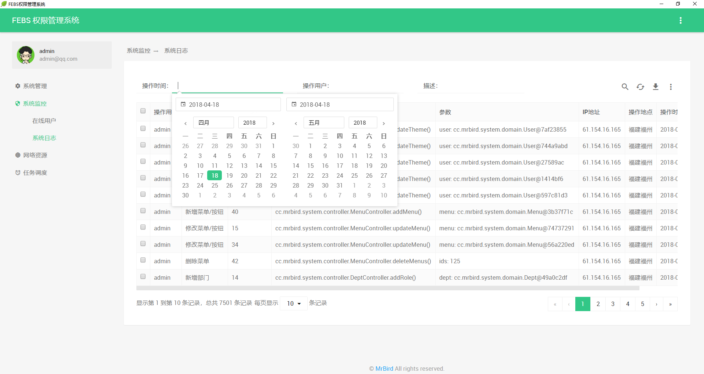
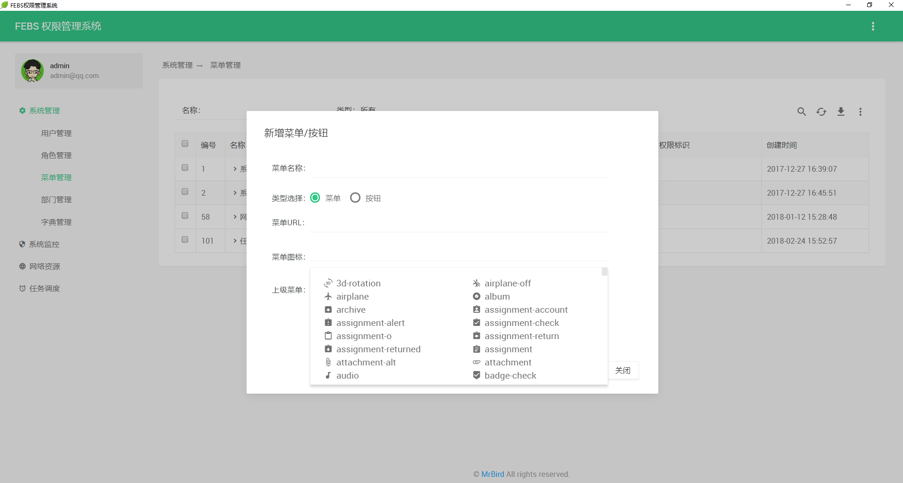
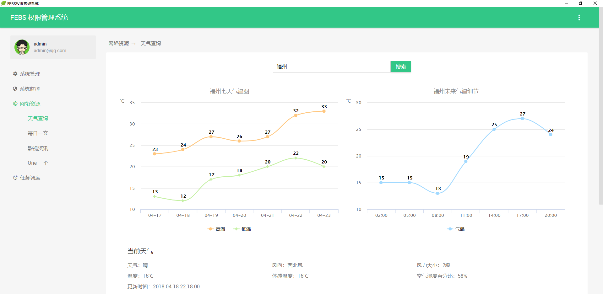

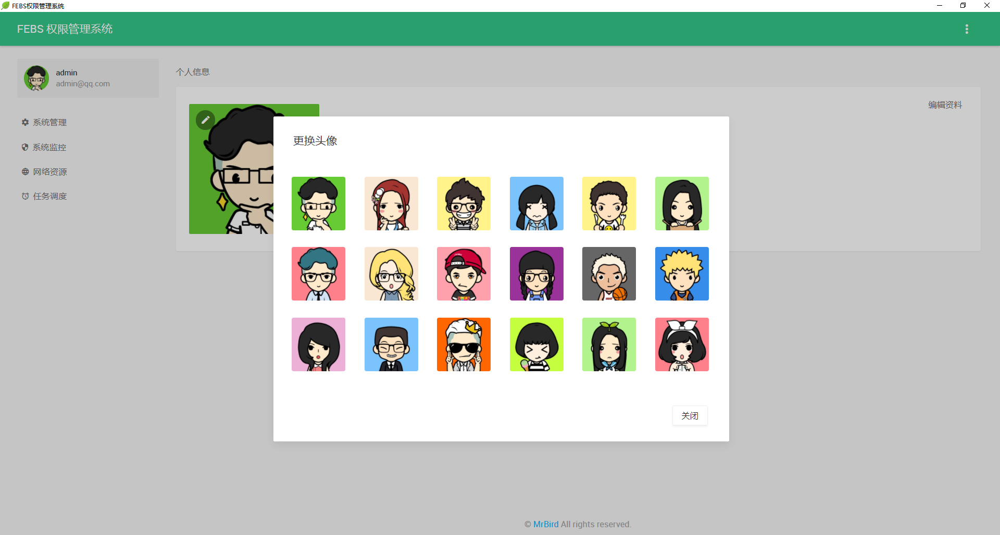
主题预览
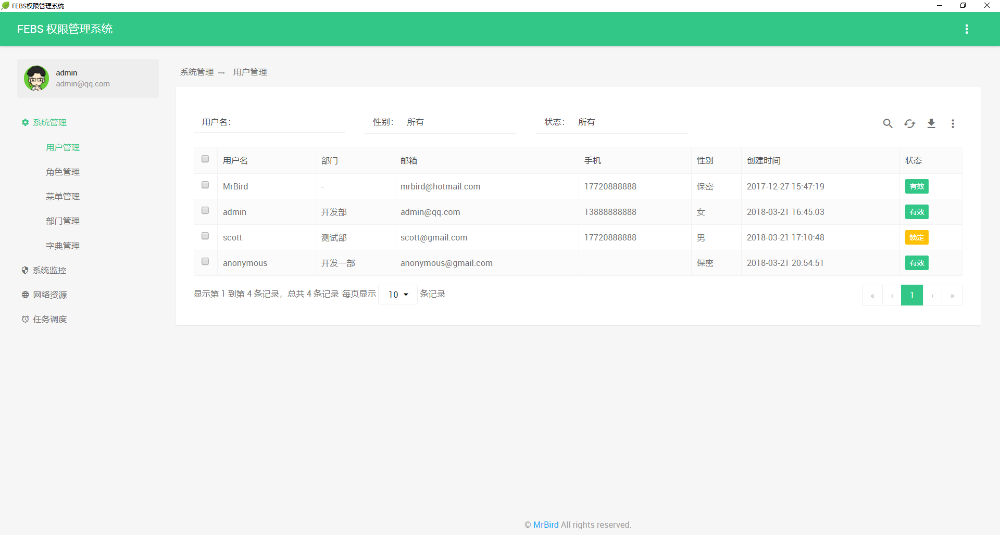
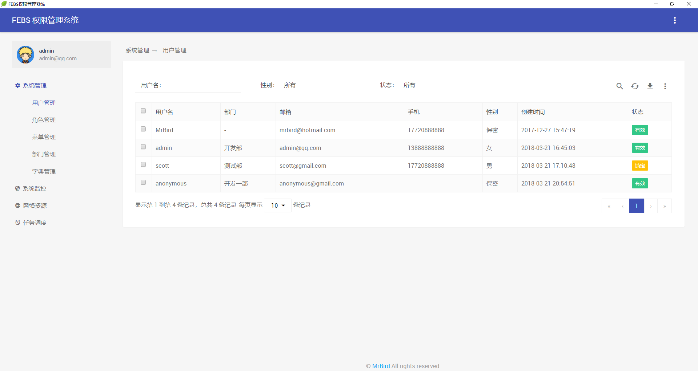
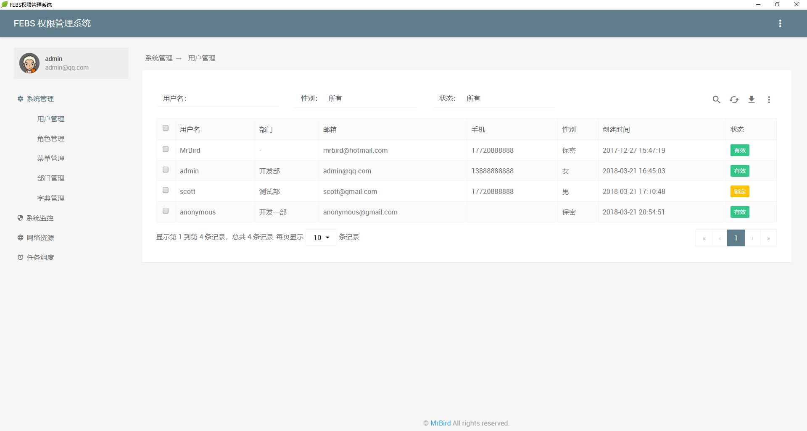
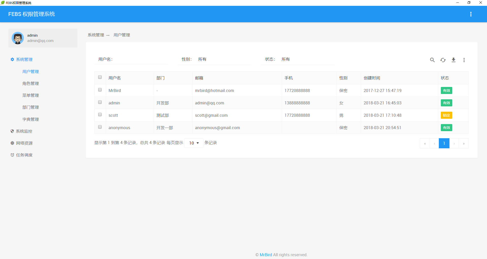
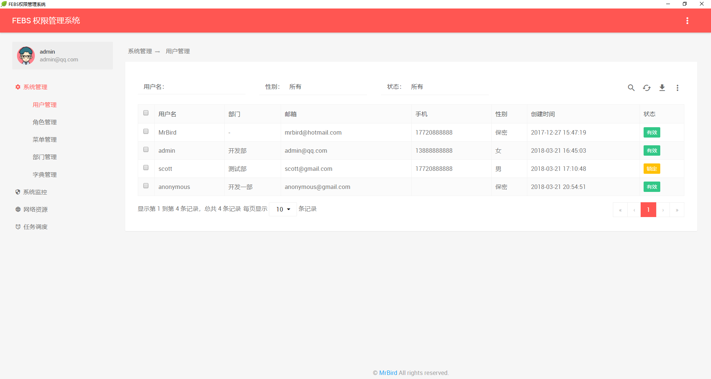
下载部署
码云地址： https://gitee.com/github-16661027/project
GitHub 地址： https://github.com/wuyouzhuguli/FEBS
下载后以Maven项目的方式导入Eclipse或者IDEA。
开发时直接使用Spring Boot的入口类cc.mrbird.Application启动即可，访问地址localhost:8080，账号mrbird，密码123456。
部署时，使用Maven将项目打包成febs.jar，然后使用命令java -jar febs.jar启动即可。在Linux下部署Spring Boot jar，并编写启停脚本可参考链接https://mrbird.cc/Linux%20Spring-Boot-jar.html。
常见问题
如何下载代码
手动下载
下载Oracle版本：
分支选择master，然后点击 download zip即可，如下图所示：
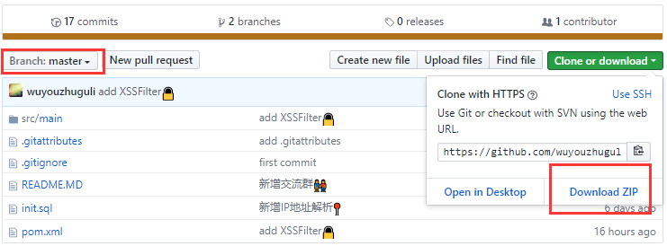
下载MySQL版本：
分支选择mysql，然后点击 download zip即可，如下图所示：
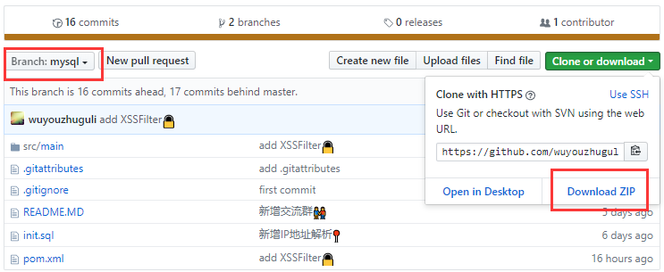
Git命令
下载oracle版本：
1 | git clone https://github.com/wuyouzhuguli/FEBS.git |
下载mysql版本：
1 | git clone -b mysql https://github.com/wuyouzhuguli/FEBS.git |
Servlet依赖问题
启动项目后报Servlet依赖未找到，比如：
Post-processing of merged bean definition failed; nested exception is java.lang.NoClassDefFoundError: javax/servlet/ServletRequest
<scope>provided</scope>去掉：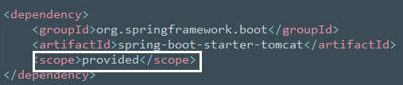
表不存在
这个问题一般出现在Linux环境下的MySQL数据库中，Linux下的MySQL数据库默认开启了大小写敏感，即t_user和T_USER是两个完全不同的表。解决办法：
将代码中的表名大小写改为和数据库一致（不推荐！繁琐又容易出错）；
关闭MySQL大小写敏感，可参考：https://blog.csdn.net/fdipzone/article/details/73692929。
Oracle驱动依赖问题
以ojdbc6为例，由于版权的原因，我们需要将ojdbc6.jar依赖安装到本地的maven仓库，然后才可以在pom中进行配置。
下载ojdbc6.jar文件后，将其放到比较好找的目录下，比如D盘根目录。然后运行以下命令：
1 | C:\Users\Administrator>mvn install:install-file -Dfile=D:/ojdbc6.jar -DgroupId=com.oracle -DartifactId=ojdbc6 -Dversion=6.0 - |
接着在pom中引入：
1 | <dependency> |
这里的groupid就是你之前安装时指定的-Dgroupid的值，artifactid就是你安装时指定的-Dartifactid的值，version也一样。